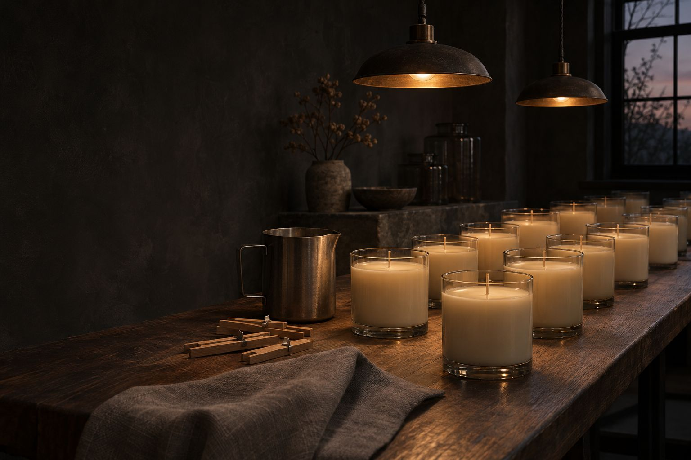
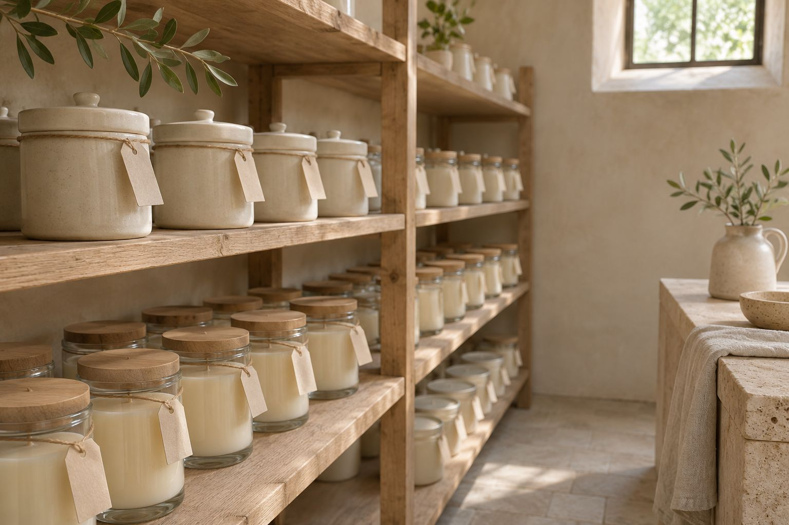
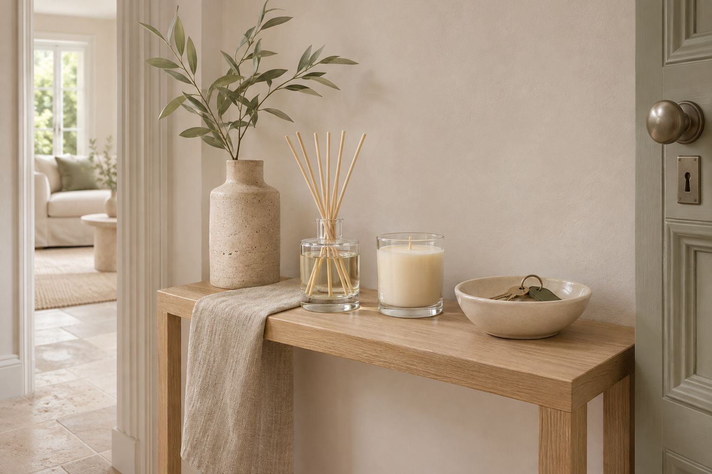
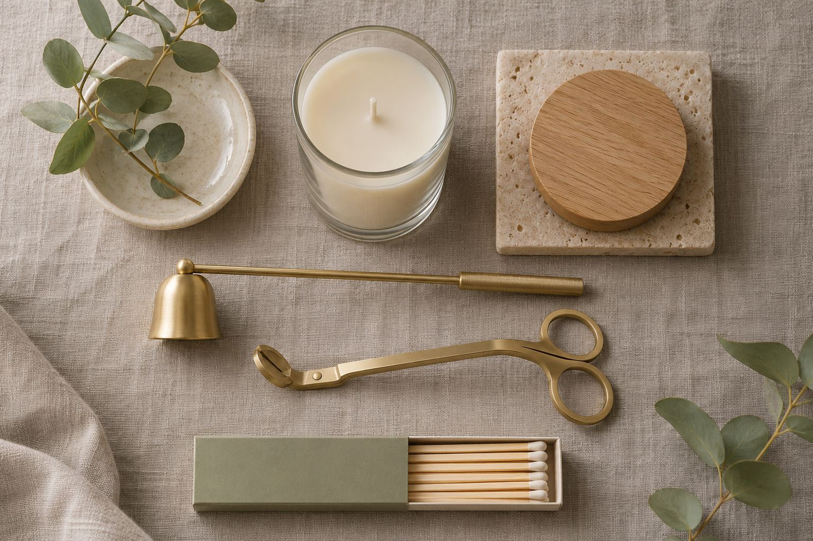
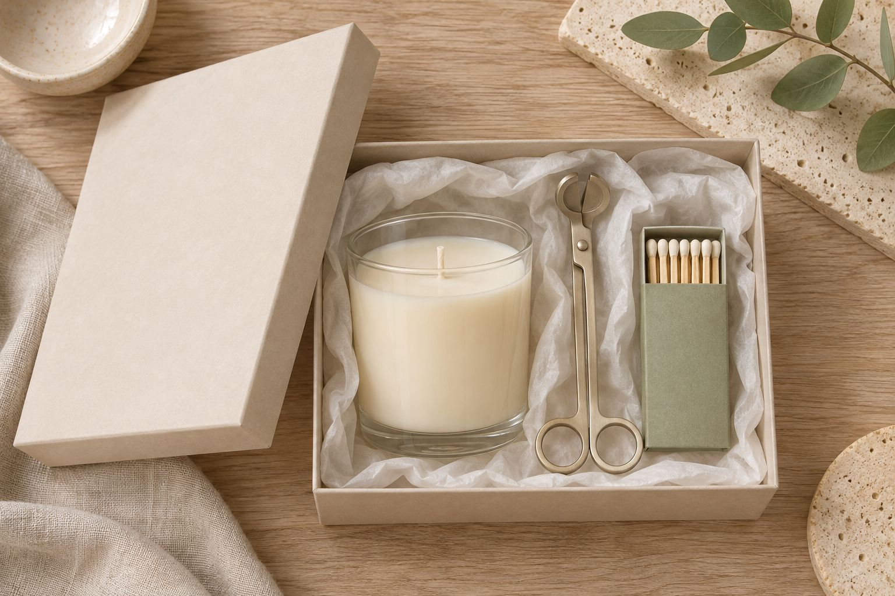
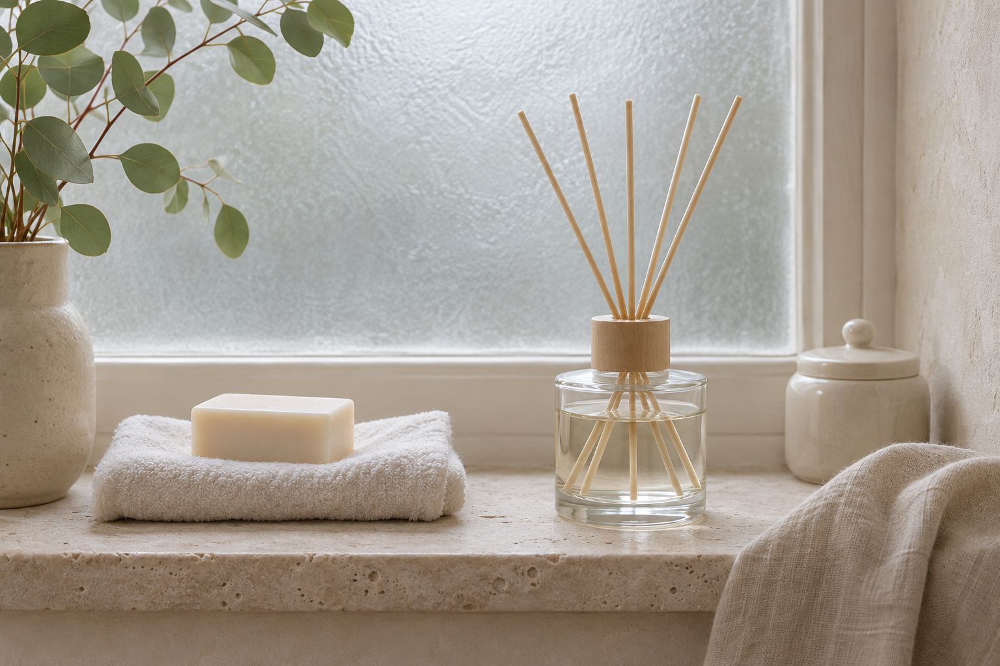

Making
Blended, poured and finished by hand. Small batches, one standard for every vessel.

One studio. A few makers.
Every scent is blended and every candle poured in our studio. The glass and ceramic vessels come from specialist makers. Everything comes back to the studio to be cured, tested and packed.
Four steps.

Blending
Each scent is weighed and mixed by hand from its own recipe, a batch at a time.
Means: the same scent, every time.
Pouring
Wax and fragrance are poured at the right temperature, with the wick set dead centre.
Means: an even melt from the first burn.
Curing
Every candle rests for two weeks before it leaves, so wax and scent can bind.
Means: a fuller scent when lit.
Wick trimming
Wicks are trimmed to length by hand once the wax has set.
Means: a calm flame, less soot.Burned before it ships.
A candle from every batch is lit and watched, not just weighed.
Ingredients
Wax, oils and wicks checked on arrival.
First burn
The melt pool must reach the edge.
Full burn
Flame height and soot watched to the end.
Scent throw
Checked cold, and lit in a closed room.
Finished by hand.
Labelled, boxed and packed in the studio, so every order is checked by a person.
Labelled
By hand, with scent, size and code
Batch-numbered
Every vessel traceable to its pour
Packed
Boxed and padded for the journey
Tracked
Delivered door to door
What goes in.

Wax
A coconut-and-rapeseed blend that melts evenly and holds scent well.
Fragrance oils
Blended in the studio from a short list of oils, each tested in wax and in reed base.

Cotton wick
Braided cotton, sized to each vessel's width so the flame stays steady.

Glass & ceramic
Vessels from specialist makers, thick enough to refill and keep for years.



